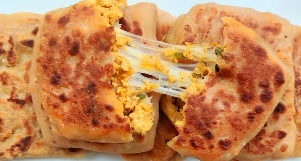

CHEESE PARATHA

DESCRIPTION
PARATHAS form an important part of North Indian breakfast and there is no way you can ignore them. Stomach-filling and delicious, stuffed parathas can be enjoyed with curd, pickles and even your favourite sabzi. You must have heard of the usual parathas like aloo-pyaaz paratha, paneer paratha, gobhi paratha; however, here is a paratha recipe that will make you eat them in no time.
Though Cheese Paratha is not that popular, but it is something that you can easily prepare in the comfort of your home. All you need is some processed cheese cubes, wheat flour, red chilli powder, garlic, green chillies and you are good to go. Though this paratha recipe uses processed cheese, but you can also choose other cheese types like mozzarella cheese or even cheese slices. The cheese inside these delectable parathas will melt in your mouth and will leave you longing for more. They are really easy-to-make and can be prepared in a jiffy.
It is a perfect dish to pack for your kids' lunch box and they will love you for it! They will be delighted to have these yummy parathas. They could also be your Sunday brunch dish to be enjoyed with your family. So, wait no more and put on your apron to prepare these tasty parathas. Relish them with your loved ones.
INGREDIENTS
INSTRUCTION
Prepare the dough-
- I prepared my dough in the Nutril mill artiste. You can prepare it any stand mixer or knead it hand also.
- In a mixing bowl, add the whole wheat flour, oil, and salt. First, mix it and then slowly add water little by little and knead into the soft dough.
- If you are using the stand mixer, follow the instructions accordingly. In my artiste, I first add all the dry ingredients and mix it in pulse mode. Then add ¾ cup of water and mix it using pulse mode. Then I knead the dough at speed 3 or 4 for 5 to 7 minutes. If needed, I add a tbsp or two of water.
- After kneading, let the dough rest for 20 minutes. Make sure you cover the dough.
- Divide the prepared dough into equal parts and roll them into smooth balls. I divided my dough into eight balls.
Prepare the filling-
- In a mixing bowl, add the grated cheese, Italian seasoning, and red chili flakes and mix it.
Stuff and roll the cheese paratha-
- On a dusted surface, take one ball and roll it out into a small circle, 3 to 4 inches in diameter. Do not roll it too thin. Now take about 1 to 1.5 tbsps of cheese stuffing and place it in the center. Add the filling according to your dough size.
- Bring all the edges in a pleated/folded fashion towards the center. Usually, all the recipes call to pinch off the excess dough as we bring the edges to the center. But I don’t do that. I press the excess dough and flatten it.
- Now using the rolling pin, evenly roll the paratha into 6 to 7-inch circle. The paratha dimensions are to provide a rough idea. Depending upon the dough size and your preference, roll them. Also, you can roll into triangles or squares as well. Apply equal pressure when rolling. That’s something that I learned from my friend. Shake off the excess flour.
- Similarly, make all the parathas and keep them ready. If you are getting started with parathas, roll all the parathas first. As you become a pro, you can roll and cook simultaneously.
Cook the paratha-
- Heat an iron tawa and make sure it is hot. Make sure the heat is at medium to medium-high. Tawa should always be hot.
- Place the rolled paratha on the hot tawa. Let it cook for 30 seconds or so, spread ¼ tsp of oil around the edges, and cook for 30 seconds.
- Now flip the parathas and spread some oil (¼ tsp) on top of the paratha. Gently press the paratha with the spatula and cook until you see the brown spots like below.
- Parathas will puff up too, and that’s a good sign. :-)
- Note – Make sure you press the edges so that it cooks well. Add oil as required and flip the parathas as required. We need to cook until the parathas are crisp, and brown spots appear. Be a little generous with the oil.
- Place the prepared paratha separately and apply a small layer of butter. This step is optional.
NOTES
- You can prepare the filling with your preferred cheese and spice blends. Instead of red chili flakes, you can add finely chopped deseeded jalapenos as well. Cheese and jalapenos make the best combo.
- Do not overfill the stuffing and press evenly for soft and crisp parathas. Make sure your tawa is hot while cooking the paratha.
NUTRITION
Calories: 193kcal | Carbohydrates: 22g |
Protein: 7g | Fat: 10g |
Saturated Fat: 3g | Cholesterol: 11mg |
Sodium: 161mg | Potassium: 130mg |
Fiber: 3g | Sugar: 1g |
Vitamin A: 251IU | Calcium: 94mg |
Iron: 1mg
I am not a nutritionist. The nutritional information is provided as a courtesy and is an estimate only. It varies depending upon the product types or brands.
CONTENT SOURCES